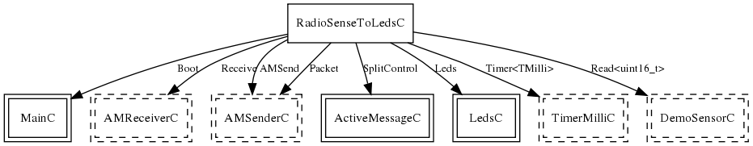

Configuration for the RadioSenseToLeds application. RadioSenseToLeds samples a platform's default sensor at 4Hz and broadcasts this value in an AM packet. A RadioSenseToLeds node that hears a broadcast displays the bottom three bits of the value it has received. This application is a useful test to show that basic AM communication, timers, and the default sensor work.
